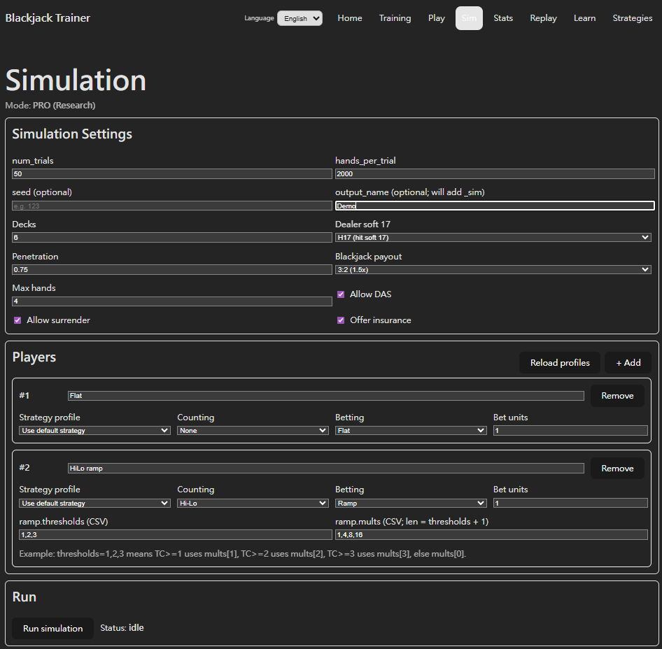
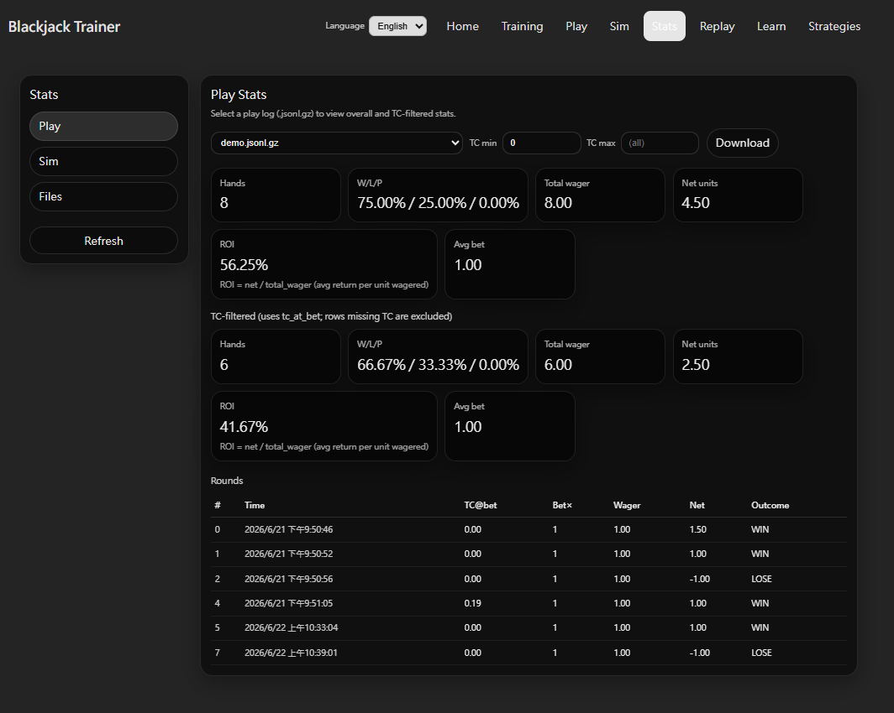
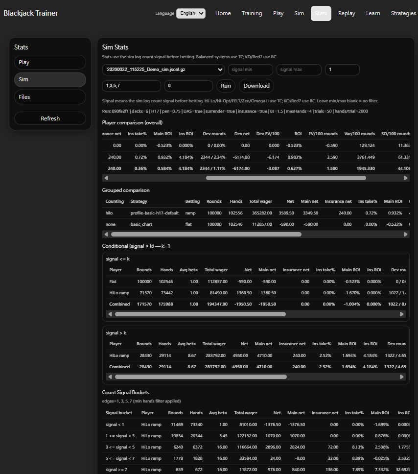
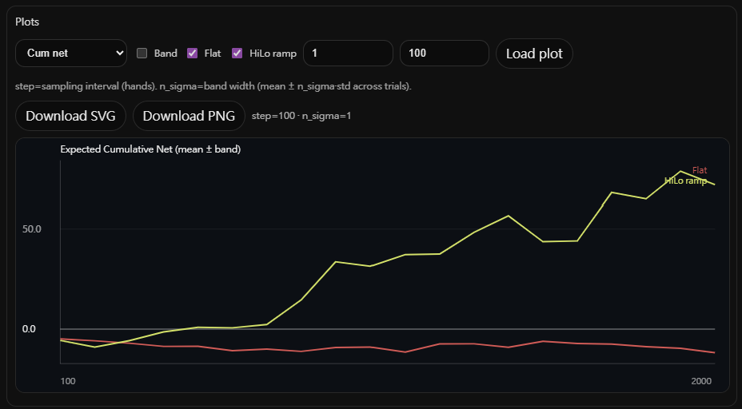
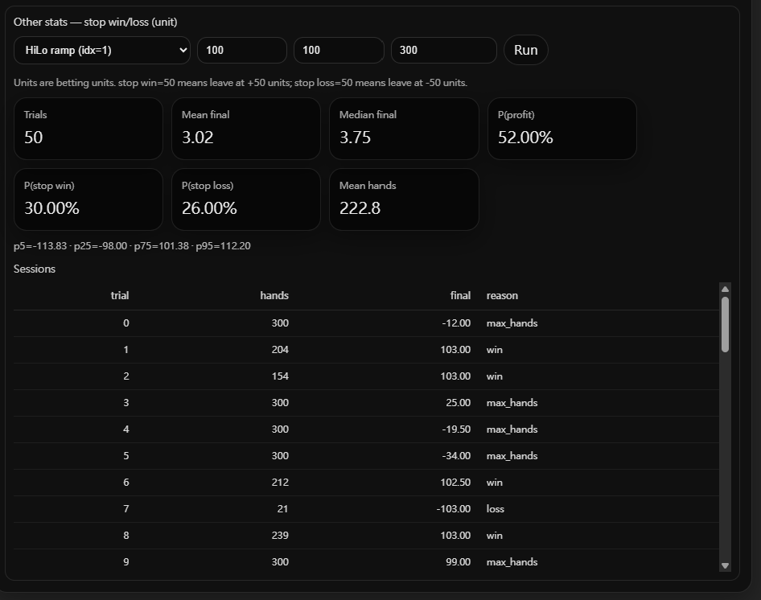
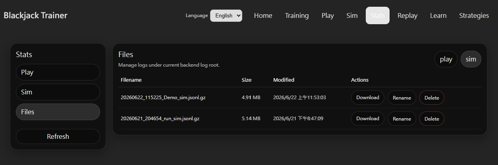

統計
Stats 頁面分為三個部分：Play Stats 統計 Play 模式真實遊玩的結果、Simulation Stats 分析 Monte Carlo 模擬結果、Files 管理遊玩與模擬的紀錄檔案。

Sim（模擬）
Sim 頁面用來設定並執行模擬。Python 引擎在後台執行，完成後結果自動存成 .jsonl.gz 檔案；再到 Stats 頁面載入該檔案進行統計分析。
模擬採用 Trial 架構：每次執行包含 num_trials 個獨立場次，每場次跑 hands_per_trial 手牌，兩者相乘是總模擬手數。
- num_trials（場次數）：每個 trial 是一次獨立遊玩，牌靴重新洗牌、算牌從零開始，互不影響。多個 trial 的結果形成分布，可觀察同一設定在長期表現上的穩定性與波動範圍。
- hands_per_trial（每場次手數）：每個 trial 要打的手數，代表單次遊玩的長度。較大的值模擬更長的遊玩過程；搭配多個 trial 可確認長期結果的分布。
局數上限（FREE / PRO）：FREE 版最多 50 個 trial、每 trial 最多 2,000 手、合計不超過 10 萬手。PRO 版最多 2,000 個 trial、每 trial 最多 20,000 手、合計不超過 500 萬手。
- 桌規：H17 / S17、牌組數（最多 12 副）、穿透率、Double After Split、Blackjack 賠率、Surrender、保險，模擬不同桌況。
- 算牌系統：Basic（無算牌）或七套算牌系統（Hi-Lo、KO、Red 7、FELT、Zen、Hi-Opt I、Omega II）。
- Bet Ramp：設定算牌訊號門檻與下注倍率，觀察下注策略對長期 EV 與 ROI 的影響。
- Strategy Profile（PRO）：套用在 Strategies 頁面建立的自訂 Strategy Profile，模擬使用自訂 Deviation 規則的長期期望值。
- 多席位比較：同一場模擬中設定多位玩家，各自使用不同系統或 Bet Ramp，一次跑完即可在 Stats 直接比較各組結果。
- Output Name：為結果檔案命名，方便之後在 Stats 快速找到對應的模擬。

Play Stats
Play Stats 載入 Play 模式的遊玩紀錄（.jsonl.gz），統計真實遊玩的結果與表現。從下拉選單選取紀錄檔案後即可查看。
- 整體統計：總手數、贏/輸/平局率（W/L/P）、總下注量（單位）、淨盈虧（Net units）、ROI（= 淨盈虧 ÷ 總下注量）與平均下注倍率。
- TC 區間篩選：可設定 TC min / TC max 範圍，單獨統計下注時 True Count 落在該範圍內的局數，確認特定 count 狀態下的實際表現是否符合預期。
- 逐局紀錄：Rounds 表格列出每局的時間、下注時 TC（TC@bet）、下注倍率（Bet×）、Wager、淨盈虧（Net）與勝負（Outcome），方便逐局回顧。

Simulation Stats
Simulation Stats 載入 Sim 產生的 .jsonl.gz 結果檔案進行多角度統計分析。選取檔案後點擊 Run 載入結果。可使用 signal min / max 過濾特定訊號範圍（Hi-Lo / Hi-Opt I / FELT / Zen / Omega II 使用 True Count；KO / Red 7 使用 Running Count），留空代表不過濾。
- Player comparison (overall)：每位玩家的整體統計，包含 Total wager、Net、ROI、EV/100 rounds、Var/100 rounds、SD/100 rounds，以及 Deviation 相關數據（Deviation 局數佔比、Deviation 淨盈虧、Deviation EV/100）。Combined 列為所有玩家合計。
- Grouped comparison：依算牌系統、Strategy 與 Bet 方式（ramp / flat）分組統計，方便在同一模擬中直接對比不同設定的長期表現。
- Conditional split（signal > k）：以 k 為分界，分別統計訊號 ≤ k（低 count 狀態）與訊號 > k（高 count 狀態）時的表現，直接量化算牌訊號帶來的獲利差異。
- Count Signal Buckets：依 Bucket edges（如 1,3,5,7）把訊號切成多個區間，逐區間顯示 Avg bet×、Net、ROI 等指標，確認各 count 狀態下的期望值走向是否符合策略預期。

Plots（時間序列圖）：以圖表觀察累積淨盈虧在每個 trial 中隨手數推移的走勢。可同時勾選多位玩家疊加對比，確認不同策略在相同模擬條件下的長期走勢差異。
- Band：勾選後顯示 mean ± n_sigma × std 的信賴帶，視覺化各 trial 之間的波動範圍。
- step：取樣間隔（手數）。數值越小曲線越細緻，數值越大計算越快。
- n_sigma：信賴帶寬度。1 = mean ± 1 個標準差；2 = mean ± 2 個標準差。
- 圖表可下載為 SVG 或 PNG 格式。

Stop Win / Loss 模擬：對 Sim 的各個 trial 套用停利（stop win）與停損（stop loss）條件，統計在該規則下各 trial 的結束原因與最終盈虧分布，評估停利停損策略對長期獲利的影響。
- Stop win：累積淨盈虧達到設定值（單位）時提前結束該 trial，記為 win。
- Stop loss：累積虧損達到設定值（單位）時提前結束該 trial，記為 loss。
- Max hands：若尚未觸發停利或停損，則打完 max_hands 手後結束，記為 max_hands。
- 輸出統計：Trials 數、Mean / Median final（平均 / 中位數最終盈虧）、P(profit)（獲利機率）、P(stop win)（觸發停利機率）、P(stop loss)（觸發停損機率）、Mean hands（平均打牌手數），以及 p5 / p25 / p75 / p95 百分位數分布。
- Sessions 表格：每個 trial 的詳細結果：打了幾手（hands）、最終盈虧（final）與結束原因（win / loss / max_hands）。

Files
Files 頁面管理本機後端儲存的所有紀錄檔案。右上角可切換 play（遊玩紀錄）與 sim（模擬結果）兩個清單。
- Filename：檔案名稱格式為
YYYYMMDD_HHMMSS_名稱.jsonl.gz，包含建立時的時間戳記，方便依時序識別。 - Size / Modified：顯示檔案大小與最後修改時間，方便確認是否為最新模擬結果。
- Download：下載
.jsonl.gz紀錄檔案，可備份或使用其他工具進行自訂分析。 - Rename：重新命名檔案，方便依模擬內容或日期分類管理。
- Delete：刪除不再需要的紀錄檔案。